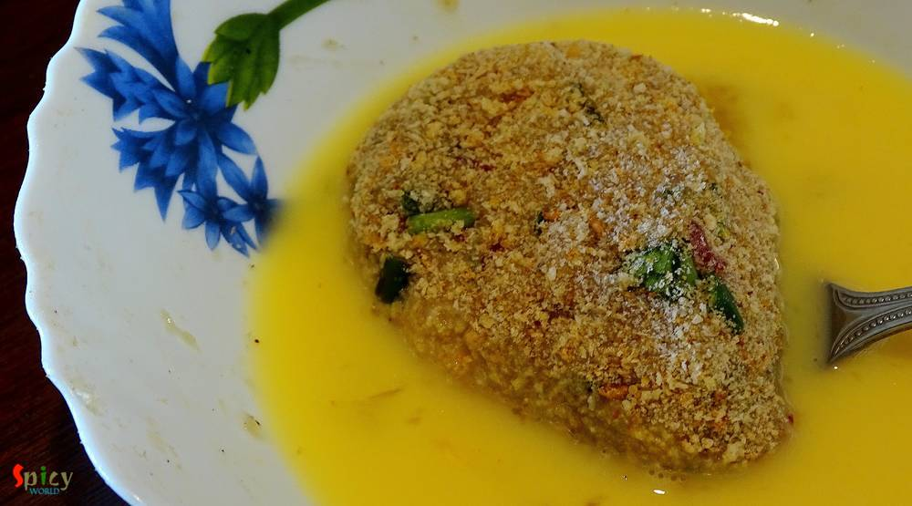

Simple and Easy Recipes
Chicken Cutlet (kolkata style) / চিকেন কাটলেট
© 2016 Spicy World, Published on: Apr 20, 2016
'Chop - Cutlet' shops are very much available in Kolkata. You will surely find one or two shop in every street. You know how much I love fried stuff, but this one sits on top of my favourite list. 'Cutlet' means breadcrumb coated fried flat croquette. Generally in India we eat this type of fast food from street shop. After my marriage my mom twice made these chicken cutlets at home. They were scrumptious and the taste was exactly like street shop's. I got the recipe from her and tried my hand on them last friday. Oh boy, they came out just perfect ! The recipe is not at all hard, it's very easy and quick. Try this in your kitchen and enjoy with your family.
 / চিকেন কাটলেট")
Ingredients
- 2 cups of smooth minced chicken.
- 5 Tablespoons of grated onion.
- 2 Tablespoons of grated ginger and garlic.
- 3 green chilies, chopped.
- A handful of chopped coriander leaves.
- Salt.
- 2 Teaspoons of black pepper powder.
- Pinch of msg (optional).
- 1 egg.
- Breadcrumbs.
- White oil for deep frying.
 / চিকেন কাটলেট")
 / চিকেন কাটলেট")
Steps
Put the minced chicken, grated onion, ginger, garlic and chopped green chilies in a mixing bowl.
Then add chopped coriander leaves, salt, msg (optional) and black pepper powder to the chicken.
Mix everything well and keep this in fridge for an hour.
Then take little portion from the mixture and give any flat shape of your choice.
Then lightly coat them in breadcrumb first.
Now beat the egg with pinch of salt.
Dip those coated cutlets in the beaten egg and again coat them in breadcrumb.
After that keep the coated cutlets in fridge for 20 minutes.
Fry them in medium hot oil for 10 to 15 minutes.
The minced chicken is raw inside. So, do not hurry while frying.
Your chicken cutlet is ready.
Serve this hot with some salads and chilli sauce.
 / চিকেন কাটলেট (Final)")